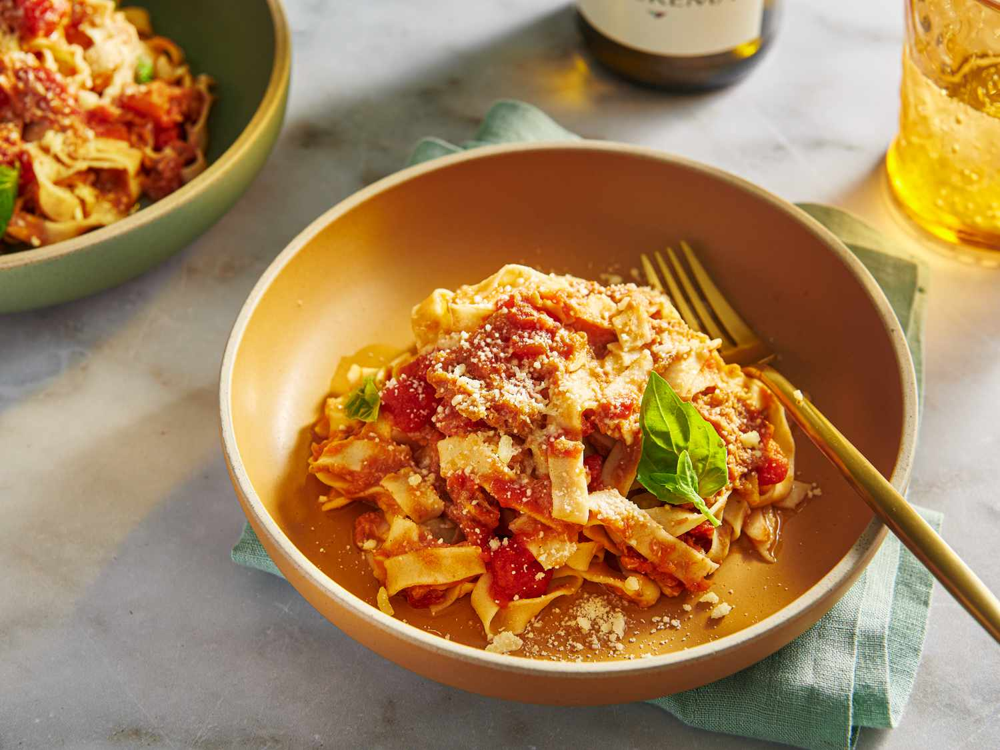

pasta
Classic Pasta

Ingredients
- 1 cup pasta
- 2 cup water
- 1 tbs salt
- 1/2 cup tomato sauce
Directions
- In a pot, boil the water and add the salt.
- Add the pasta.
- Cook for 20 minutes or until the pasta is the way you like it.
- Strain the water out and put the pasta in a bowl.
- Pour over the pasta the tomato sauce
- It ain't much but it's pasta for lazy people, and you made it. Enjoy.
More Recipes